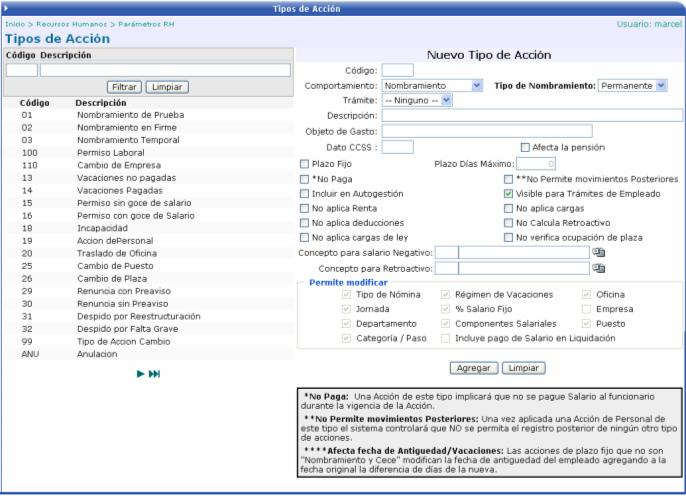
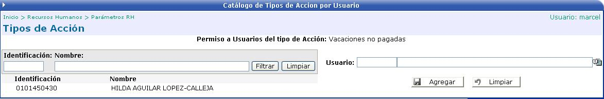

Los tipos de acción son los formatos que tendrán las acciones de personal. Cuando se definan estos tipos se podrá asignar parámetros para el cálculo de la nómina y se especificará cuales campos se podrán modificar en la acción de personal, dependiendo del tipo de comportamiento.

Los tipos de acción que son de Nombramiento, permiten modificar todos los campos con excepción de Incluye pago de Salario en Liquidación y con los de Cese ocurre el caso contrario, solamente se puede seleccionar Incluye pago de Salario en Liquidación.
El campo Dato CCSS, es el campo que se mostrará en el reporte de la CCSS. Por ejemplo para incapacidades, si es de maternidad se usa “MAT” y si es de enfermedad se usa “SEM”. Aquí el usuario define el código que desee, únicamente que debe de ser de tres caracteres.
Si el check Afecta la Pensión esta activado, significa que es una acción de pensión por lo que afecta la pensión (por el momento se usa para ceses por pensión).
Si se activa el check *No Paga, significa que una acción de este tipo no le pagará salario al funcionario, durante la vigencia de esa acción.
Si se activa el check **No permite movimientos posteriores, una vez aplicada una Acción de Personal de este tipo el sistema controlará que NO se permita el registro posterior de ningún otro tipo de acciones.
También hay una sección donde se pueden agregar Cálculos Especiales. Ésta aparece cuando se quiere modificar un tipo de acción y sirve para agregar conceptos de pago para ser calculados en la acción. Constan de un concepto de pago y de un tipo.
Los posibles valores que puede tener el ***Tipo son:
• Monto de Salario: es el cálculo de salario que aplica durante la vigencia de la Acción.
• Incidencia: es el pago total del monto resultante en la siguiente nómina.
• Monto a rebajar: es el monto que se rebajará de acuerdo con los días trabajados.
• Monto a pagar: es el monto que se pagará de acuerdo con los días trabajados.
Cuando se va a modificar un tipo de acción, se presenta el botón , el cual sirve para asignar usuarios a los diferentes tipos de acción. Esta asociación, es con el objetivo de autorizar a cierto grupo de usuarios a trabajar o a tener acceso al tipo de acción al que esta ligado.
